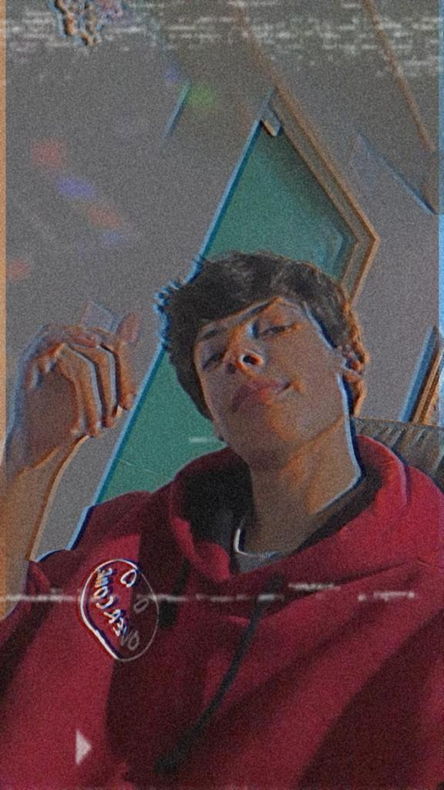
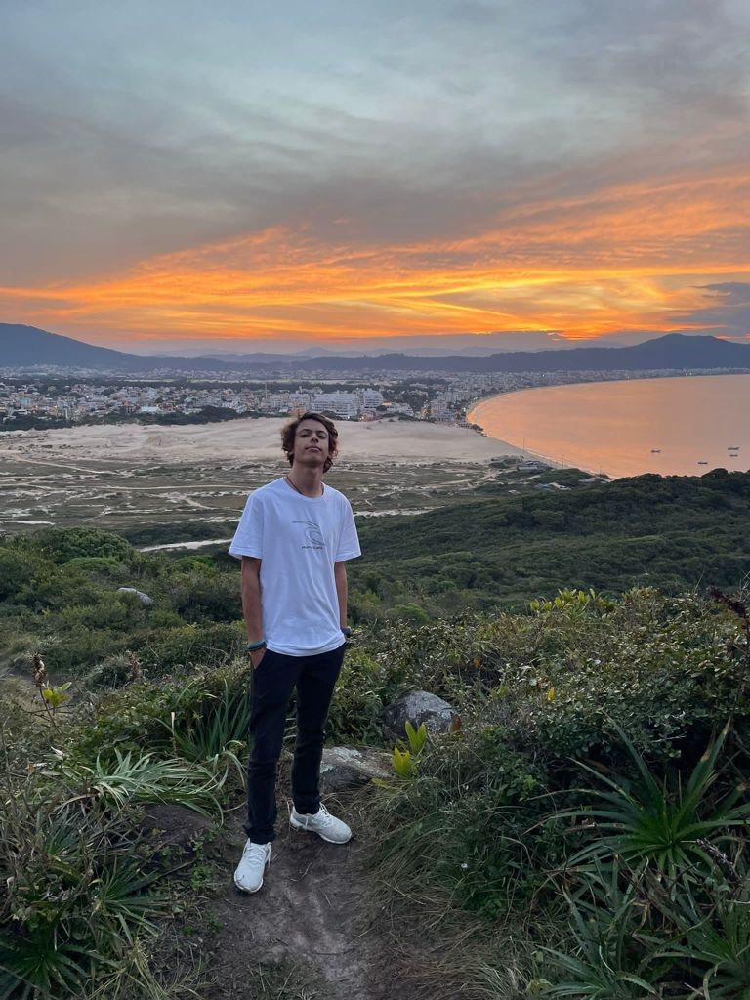

Meu nome é Gabrie Broering Mazzolla Morais, tenho 16 anos. Nasci em Curitiba, porém a mais o menos 3 anos me
mudei com a minha família para Florianópolis. Atualmente estou estudanto no SESI SENAI CTAI, aonde estou
fazendo o curso técnico em Análise e
Desenvolvimento de sitema.


Formação
No curso Técnico em Análise e Desenvolvimento de Sistema, estamos aprendendo diversas habilidade.
Nossa formação esta baseada em Design, Lógica de programação, Banco de Dados e Redes
Minha formação é composta por:
Curso de Inglês/5anos - Nível avançado
Ensino Fundametal - Completo
Ensino Médio - Cursando
Experiências Profissionais
Desenvolvimento de uma empresa junto com o meu pai, naqual fiquei encarregado de fazer toda a parte de design.
Voluntário do professor Bruno da aula de programação